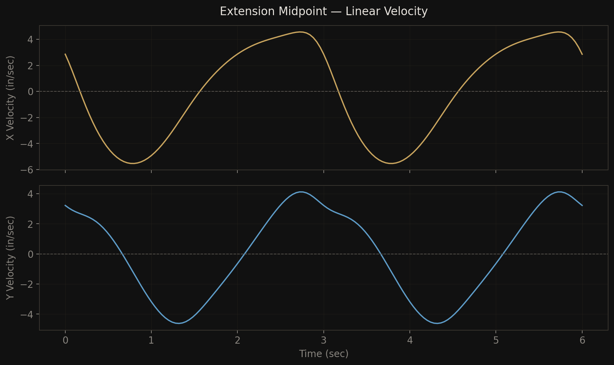
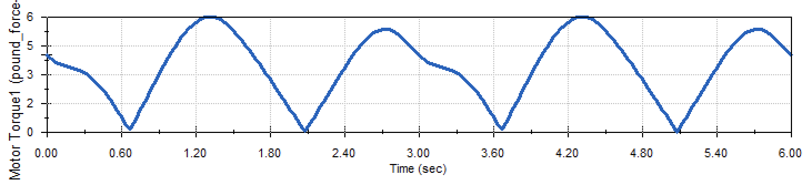
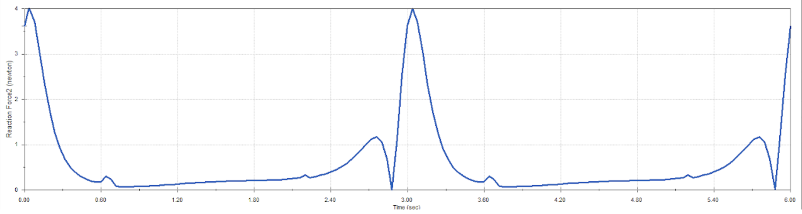
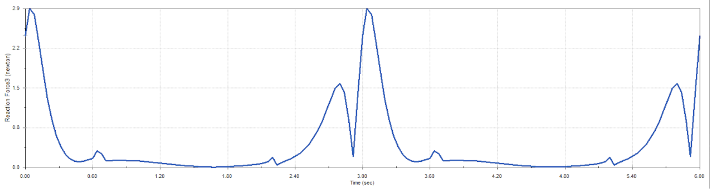

Overview
A four-bar linkage is one of the simplest closed-loop mechanisms — four rigid links connected by revolute joints, with one link fixed as the ground. Despite its simplicity, the four-bar produces complex coupler curves and is the basis for countless real-world machines, from windshield wipers to locomotive wheels.
This project involved assembling a four-bar mechanism in SolidWorks (Bearing, Crank, Extension, and Rocker, with bearings spaced 130 mm apart), resolving joint redundancies for accurate motion simulation, and then running a full kinematic and dynamic analysis — velocity traces, motor torque under gravity, bearing reaction forces, and power requirements at higher speeds.
Assembly & Joint Configuration
The mechanism consists of five components: two fixed bearings (Bearing and NewBearing, 130 mm apart on the ground), a Crank driven by a rotary motor, an Extension acting as the coupler link, and a Rocker connecting the coupler back to the second bearing.
Initially, all four connections were modeled as revolute (hinge) joints. When the motion solver checked for redundancies, it found 9 redundant constraints — the mechanism has 1 degree of freedom, but the hinge joints were over-constraining the planar motion by locking out rotations that should be free in a real physical linkage.
Resolving redundancy: Two changes brought the redundant constraints from 9 to 0. First, the hinge between Extension and Rocker was replaced with a concentric mate, which allows axial sliding and rotation rather than rigidly locking the joint. Second, the hinge between Rocker and NewBearing was suppressed and replaced with a spherical joint (point-coincident mate), freeing additional rotational axes. The result: exactly 1 DOF, controlled by a single rotary motor on the Crank.
Trace Paths
With a 20 rpm rotary motor applied to the Crank (producing two full revolutions over 6 seconds), trace paths were plotted at three points along the Extension link — at ¼, ½, and ¾ of its length.

The trace paths illustrate how different points on the coupler link follow distinct trajectories. The ¼-length point (nearest the Crank) sweeps the widest arc, closely following the Crank's circular motion. The ¾-length point (nearest the Rocker) traces a tighter, more elliptical path constrained by the Rocker's oscillation. The midpoint path sits between the two — this is the classic coupler curve that makes four-bar mechanisms useful for generating complex output motion from simple rotary input.
Velocity Analysis
The X and Y linear velocities were extracted for the midpoint of the Extension link and exported to CSV for analysis.

Both velocity components are periodic with a 3-second cycle (matching the Crank's 20 rpm rotation). The X-velocity oscillates roughly symmetrically about zero, peaking near ±6 in/sec, indicating the midpoint sweeps left and right with roughly equal speed. The Y-velocity shows an asymmetric profile — the upward and downward phases differ in magnitude, reflecting the non-symmetric geometry of the mechanism (the Rocker side constrains vertical motion differently than the Crank side).
Motor Torque Analysis
With all parts set to Plain Carbon Steel and gravity enabled, the motor torque required to maintain a constant 20 rpm was plotted over the full 6-second simulation.

(a) Maximum Motor Torque
The maximum motor torque is 6.00 lbf·in, occurring at t = 1.32 s in the first cycle and t = 4.32 s in the second cycle.
(b) Crank Angle at Maximum Torque
Using the angular displacement data, the crank angle at peak torque is 68.4° in both cycles. At this position the Crank is pushing the mechanism's mass upward against gravity through its most demanding configuration — the combined weight of Extension and Rocker is being lifted with poor mechanical advantage.
(c) Maximum Vertical Force on Bearings


The maximum vertical reaction force on Bearing is ~4.0 N and on NewBearing is ~2.9 N. Both peaks occur at the start of each cycle (t ≈ 0, 3, 6 s), which coincides with transient effects as the mechanism passes through its starting configuration. The steady-state peaks within each cycle are lower (~1.1–1.5 N), representing the forces during continuous operation.
(d) Minimum Motor Power at 600 rpm
To determine the minimum power required at 600 rpm, the simulation was re-run at the higher speed. The steady-state maximum torque at 600 rpm is 74.6 lbf·in (significantly higher than at 20 rpm due to inertial forces scaling with $\omega^2$). Converting to SI and computing power:
The minimum motor power required is approximately 530 W (0.71 hp). This is a minimum because the motor must be able to supply the peak torque demand at any point in the cycle while maintaining constant angular velocity.
(e) Negative Motor Torque
Looking at the torque plot, the motor torque drops to near zero (~0.01 lbf·in) but remains positive throughout the cycle. In a more general case — or with different mechanism geometry — negative torque values indicate that the motor must actively resist the mechanism's motion rather than drive it. This occurs when gravity is pulling the links downward in a way that would accelerate the Crank beyond the target speed. The motor effectively acts as a brake during these phases, absorbing energy rather than supplying it.
In this specific mechanism, the torque stays positive because the gravitational loads are relatively small at 20 rpm — the motor always needs to push to maintain speed, though the effort varies significantly through the cycle. At higher speeds (600 rpm), the inertial forces dominate and negative torque regions become more pronounced as the mechanism's momentum carries the Crank through portions of the cycle.
Reflection
This project reinforced the difference between a geometrically correct assembly and a dynamically valid simulation. The mechanism looked right with all-hinge joints, but the 9 redundant constraints would have produced unreliable force and torque results. Understanding why a concentric mate and a spherical joint resolve those redundancies — not just that they do — is key to building trustworthy simulations of any closed-loop mechanism.
The torque analysis also highlighted how dramatically operating conditions change with speed. The same mechanism that needs 6 lbf·in at 20 rpm demands 74.6 lbf·in at 600 rpm — a 12× increase driven by inertial forces that scale with the square of angular velocity. Any real motor selection would need to account for this nonlinear scaling.